Anglais professionnel : Froid et climatisation
CAP Installateur en froid et conditionnement d'air. Seize mots anglais du métier, outils, objets et gestes de tous les jours. Ressource en libre accès.
Quatre étapes : du français à l'anglais, écouter et choisir, associer, compléter une phrase au travail. Le bouton « Écouter » lit le mot en anglais britannique.
Liste de vocabulaire
| Image | Français | English | Audio |
|---|---|---|---|
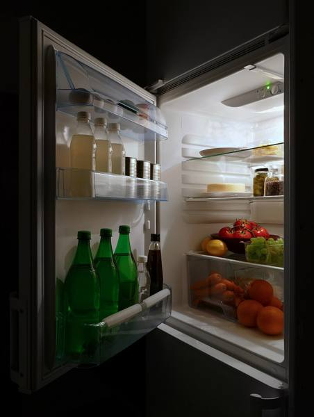 | le réfrigérateur | fridge | |
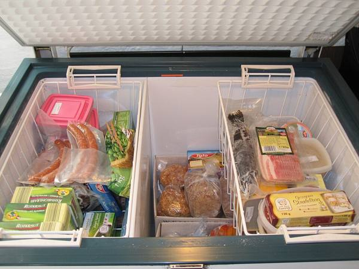 | le congélateur | freezer | |
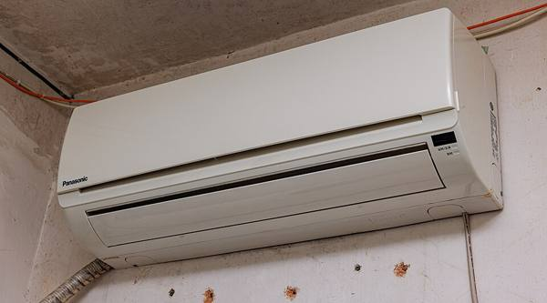 | le climatiseur | air conditioner | |
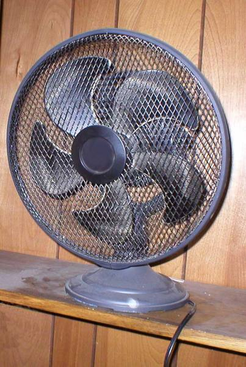 | le ventilateur | fan | |
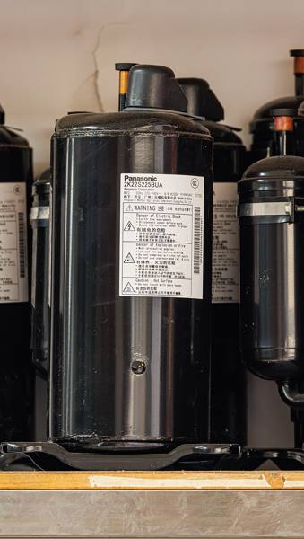 | le compresseur | compressor | |
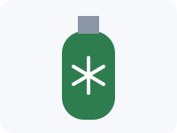 | le fluide frigorigène | refrigerant | |
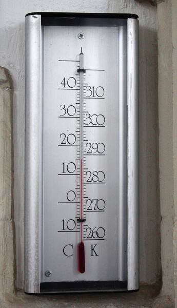 | le thermomètre | thermometer | |
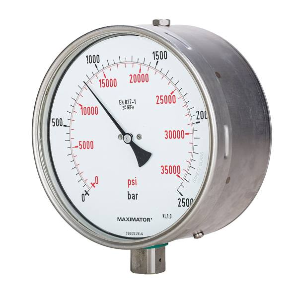 | le manomètre | pressure gauge | |
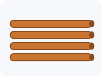 | le tube en cuivre | copper pipe | |
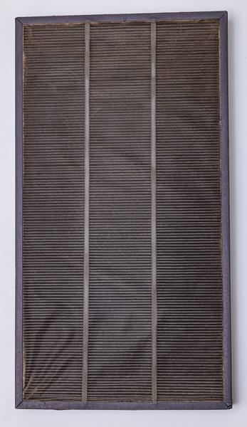 | le filtre | filter | |
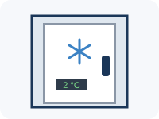 | la chambre froide | cold room | |
| l'isolation | insulation | ||
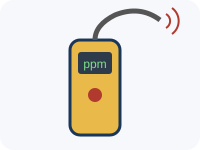 | le détecteur de fuite | leak detector | |
| la pompe à vide | vacuum pump | ||
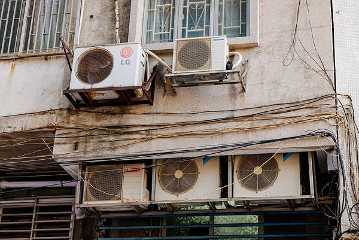 | l'unité extérieure | outdoor unit | |
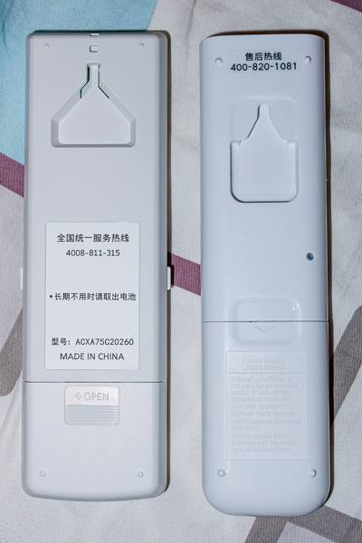 | la télécommande | remote control |
Corrigé pour le professeur : phrases au travail
- Check the temperature with the ________. (thermometer)
- Read the pressure on the ________. (pressure gauge)
- Air goes through the ________: clean it every month. (filter)
- Find the leak with the ________. (leak detector)
- Set the temperature with the ________. (remote control)
- Fix the ________ on the wall outside. (outdoor unit)
Dans les étapes 1, 2 et 3, la bonne réponse correspond à la ligne de la liste de vocabulaire.
Crédits des images
Photos sous licence libre, issues de Wikimedia Commons, redimensionnées pour le téléphone. Dessins originaux pour les gestes et les notions.
- le réfrigérateur (fridge) : photo de W.carter, licence CC BY-SA 4.0, page du fichier sur Wikimedia Commons.
- le congélateur (freezer) : photo de Tiefkuehlfan, licence CC BY-SA 3.0, page du fichier sur Wikimedia Commons.
- le climatiseur (air conditioner) : photo de Dinkun Chen, licence CC BY-SA 4.0, page du fichier sur Wikimedia Commons.
- le ventilateur (fan) : photo de Rfc1394, licence Public domain, page du fichier sur Wikimedia Commons.
- le compresseur (compressor) : photo de Dinkun Chen, licence CC BY-SA 4.0, page du fichier sur Wikimedia Commons.
- le fluide frigorigène (refrigerant) : dessin original, Itinéraires et destinations, CC BY-NC-SA 4.0.
- le thermomètre (thermometer) : photo de Martinvl, licence CC BY-SA 3.0, page du fichier sur Wikimedia Commons.
- le manomètre (pressure gauge) : photo de CEphoto, Uwe Aranas, licence CC BY-SA 3.0, page du fichier sur Wikimedia Commons.
- le tube en cuivre (copper pipe) : dessin original, Itinéraires et destinations, CC BY-NC-SA 4.0.
- le filtre (filter) : photo de Dinkun Chen, licence CC BY-SA 4.0, page du fichier sur Wikimedia Commons.
- la chambre froide (cold room) : dessin original, Itinéraires et destinations, CC BY-NC-SA 4.0.
- l'isolation (insulation) : dessin original, Itinéraires et destinations, CC BY-NC-SA 4.0.
- le détecteur de fuite (leak detector) : dessin original, Itinéraires et destinations, CC BY-NC-SA 4.0.
- la pompe à vide (vacuum pump) : dessin original, Itinéraires et destinations, CC BY-NC-SA 4.0.
- l'unité extérieure (outdoor unit) : photo de Dinkun Chen, licence CC BY-SA 4.0, page du fichier sur Wikimedia Commons.
- la télécommande (remote control) : photo de Dinkun Chen, licence CC BY-SA 4.0, page du fichier sur Wikimedia Commons.
Fiche de vocabulaire à imprimer
Gros caractères (16 points minimum), en trois formats :